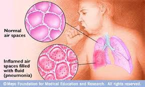

Pneumonia
Definition
Pneumonia is a lung infection that can make you very sick and it's caused by bacteria, viruses, fungi or parasites.
You may cough, run a fever, and have a hard time breathing.
For most people, pneumonia can be treated at home. It often clears up in 2 to 3 weeks.
But older adults, babies, and people with other diseases can become very ill. They may need to be in the hospital.
Pneumonia usually starts when you breathe the germs into your lungs. You may be more likely to get the disease after having a cold or the flu.
These illnesses make it hard for your lungs to fight infection, so it is easier to get pneumonia. Having a long-term, or chronic, disease like asthma, heart disease, cancer, or diabetes also makes you more likely to get pneumonia
Symptoms
- Cough
You will likely cough up mucus (sputum) from your lungs. Mucus may be rusty or green or tinged with blood. - Fever
- Fast breathing and feeling short of breath
- Shaking and "teeth-chattering" chills
- Chest pain that often feels worse when you cough or breathe in
- Fast heartbeat
- Feeling very tired or very weak
- Nausea and vomiting
- Diarrhea
Prevention
- Stop smoking: You're more likely to get pneumonia if you smoke
- Avoid people who have infections that sometimes lead to pneumonia.
- Stay away from people who have colds, the flu, or other respiratory tract infections.
- If you haven't had measles or chickenpox or if you didn't get vaccines against these diseases, avoid people who have them.
- Wash your hands often: This helps prevent the spread of viruses and bacteria that may cause pneumonia
- Vaccines are available.
- Children get the pneumococcal conjugate vaccine (PCV) as a routine vaccination.
Older adults (age 65 or older), people who smoke, and people who have some long-term (chronic) conditions also need the pneumococcal vaccine.
Depending on age and other things, adults can get PCV or the pneumococcal polysaccharide vaccine (PPSV). Some adults need both types.
- Children get the pneumococcal conjugate vaccine (PCV) as a routine vaccination.
Pictures
Symptoms

Infection
Treatment
- Antibiotics (if bacterial)
- Antifungal medication (if fungal)
- Fever medication